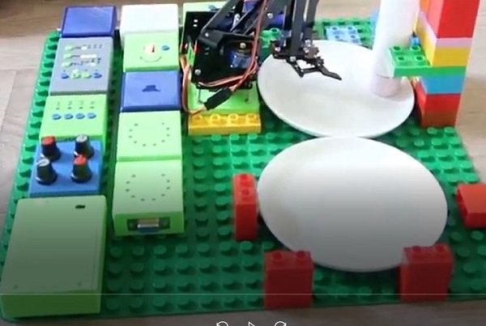
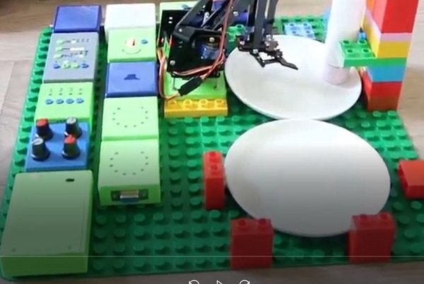

Automatický podavač bonbonů
 

Automatický podavač bonbonů na zmáčknutí tlačítka vyndá bonbon a položí ho na talířek a zapípá, že je vše hotovo.
Zapojení používá malou robotickou ruku řízenou malými servo motory.
Pohyb robota se prvně naprogramuje pomocí 4x potenciometrů. Tato sekvence pohybů se uloží do Programátoru. Po zmáčknutí tlačítka se sekvence pohybů zopakuje a robot může opakovaně vydávat bonbony.
Video
Zapojení
Potřebné moduly:
- Napájení
- 4x Potenciometr
- 4x Tlačítko
- Programátor
- Rozbočovač 2x
- Sekvencer
- 4x Servo motor kontroler
- Robot se čtyřmi servy (není součást Briskel Bricks)
- Bzučák
- Kruhová stupnice (2x) - rozšíření
Autor: Martin P. (33 let)